Locații de nuntă în județul Alba
- locații în director
- 33
- cu cazare în registrul SITUR
- 9
- medie ponderată Google
- 4,5 / 5
- evaluări Google
- 25.927
Cum alegi unde mergi la vizionare
Dacă porniți din Alba Iulia, comparați separat o vizionare spre Colțești cu una în zona Cetatea de Baltă. Numele de cetate sau de castel ajută la orientare, dar pentru ceremonie contează care parte a proprietății poate fi rezervată și pe unde pot intra invitații.
La Colțești, un oaspete al Conacului Secuiesc își amintește terasa. Luați-o ca reper pentru o discuție despre primirea familiei după cununie. O masă servită în aer liber poate să vă ajungă pentru prânz, în timp ce o petrecere cu formație cere și o zonă liberă lângă mese. Vizitați-le în această ordine și decideți dacă sunt suficient de apropiate pentru programul vostru.
Două adrese pentru o zi de vizionări
Pe hartă, între aceste două proprietăți sunt 4,7 km în linie dreaptă. Deschide indicațiile de drum din fișe ca să vezi traseul pe șosea înainte de a stabili a doua întâlnire.
- Domeniile Martinutzi · Strada Mihai Eminescu 58, 510104 DN1
- Rose Events Vințișoara · DN7 VINȚIȘOARA, 515800 Sebeș
Explorează după localitate
Toate locațiile din județul Alba
Ordinea ține cont de nota Google și de numărul evaluărilor. Cum calculăm ordinea
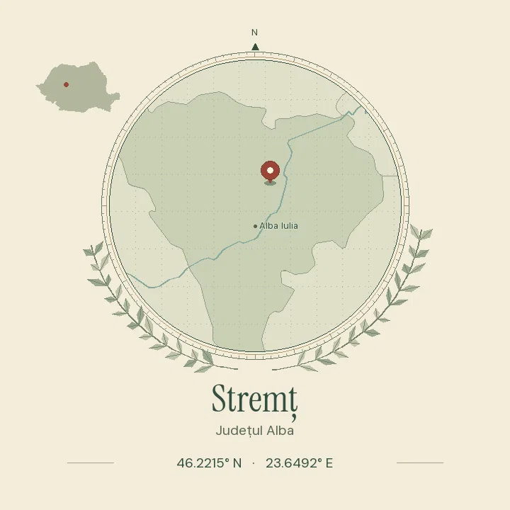
Hartă ilustrată Stremț · Bed & Breakfast
Pensiunea Colev
Pensiunea Colev, Stremț. La Colev, oaspetele care descrie camerele și piscina pune accent pe liniștea pe care a găsit-o în Stremț.
Strada Avram Iancu, 517014 Stremț+40 742 035 697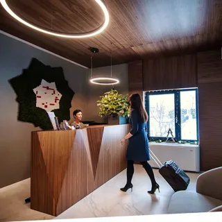
Fotografie a locației · Sursa fotografiei Alba Iulia · Hotel
Pensiunea Element
Pensiunea Element. Un oaspete de la Element își amintește camera modern amenajată, liniștea zonei și varietatea preparatelor de dimineață.
Strada Mircea Eliade 2A, 510001 Alba Iulia+40 745 323 270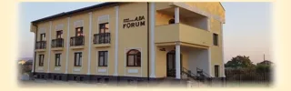
Fotografie a locației · Sursa fotografiei Alba Iulia · Pensiune
Pensiunea Alba Forum
Pensiunea Alba Forum, Alba Iulia. A contat combinația dintre liniștea cartierului, apropierea cetății și posibilitatea de a parca.
Strada Brândușei 20A, 510216 Alba Iulia+40 726 182 256
Fotografie a locației · Sursa fotografiei Alba Iulia · Restaurant cu specific românesc
Terasa Viilor
Un vizitator la Terasa Viilor din Alba Iulia își amintește în special cartofii prăjiți pe care îi descrie ca proaspeți și apreciază masa luată pe terasă.
Strada Francisca 4B, 510040 Alba Iulia+40 773 755 007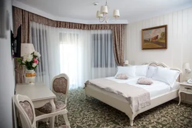
Fotografie a locației · Sursa fotografiei Alba Iulia · Pensiune
Pensiunea Ave, Alba!
Pensiunea Ave, Alba!, Alba Iulia. Imaginea de cazare arată un pat dublu, o măsuță de toaletă și un fotoliu lângă fereastră.
Bulevardul Horea 27, Alba Iulia+40 358 407 825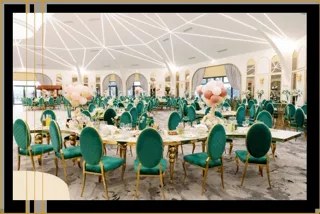
Fotografie a locației · Sursa fotografiei Cunța · Local pentru evenimente
Luxury Events Ballroom
Luxury Events Ballroom, Cunța. Este mai precis decât să întrebi despre un spațiu exterior la nivelul întregului complex.
DJ106I, 517768 Cunța+40 735 843 306
Fotografie a locației · Sursa fotografiei Alba Iulia · Castel
Castle Transylvania
Pentru Castle Transylvania există chiar mărturia unor miri care mulțumesc echipei pentru găzduirea nunții și atenția acordată invitaților.
Strada Vlădeasa 4, 510001 Alba Iulia+40 755 576 411
Fotografie a locației · Sursa fotografiei Alba Iulia · Local pentru evenimente
Cosmopolitan Ballroom
Mirii care și-au ținut nunta la Cosmopolitan Ballroom în noiembrie 2025 spun că era ultima nuntă din sezonul echipei.
Strada Tudor Vladimirescu 50A, 510167 Alba Iulia+40 752 347 300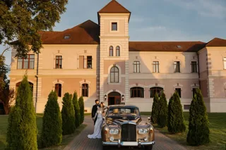
Fotografie a locației · Sursa fotografiei Zona Vințu de Jos · Organizator de evenimente
Domeniile Martinutzi
Domeniile Martinutzi. Grădinile din vecinătatea ruinelor Castelului Martinuzzi apar în prezentarea proprietății ca loc pentru ceremonii și ședințe foto.
Strada Mihai Eminescu 58, 510104 DN1+40 730 202 554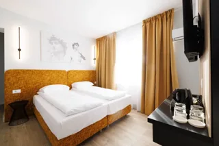
Fotografie a locației · Sursa fotografiei Alba Iulia · Sală de nunți
Mariss Events
Mariss Events. Mirii unei nunți de octombrie de la Mariss povestesc că au ales cu managerul inclusiv meniuri pentru copii și vegetarieni.
Strada Viilor 39, 510154 Alba Iulia+40 742 192 220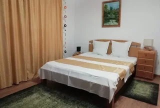
Fotografie a locației · Sursa fotografiei Geoagiu de Sus · Pensiune
Pensiunea Casa Butnarului
Pensiunea Casa Butnarului, Geoagiu de Sus. Douăzeci și patru de persoane au stat împreună la Casa Butnarului, potrivit unui participant.
Principala 175, 517747 Geoagiu de Sus+40 722 781 902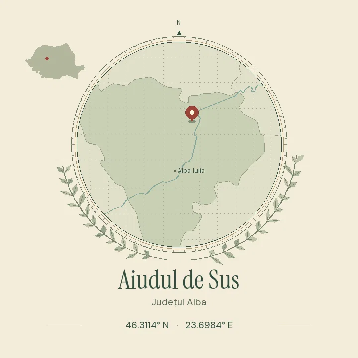
Hartă ilustrată Aiudul de Sus · Local pentru evenimente
Sala de Evenimente Aliss
Sala de Evenimente Aliss. La Aliss din Aiudul de Sus, un cuplu își descrie propria nuntă și amintește separat curățenia sălii și mâncarea.
Strada Valea Aiudului 8, 515200 Aiudul de Sus+40 755 736 952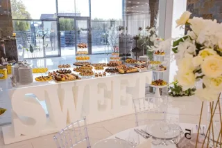
Fotografie a locației · Sursa fotografiei Alba Iulia · Sală de nunți
Jolly Events
Mirii care și-au organizat nunta la Jolly Events își amintesc reacțiile invitaților la trei lucruri concrete, sala, masa și servirea.
Strada Livezii 37, 510011 Alba Iulia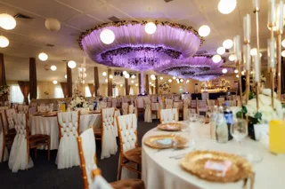
Fotografie a locației · Sursa fotografiei Sebeș · Local pentru evenimente
Rose Events Vințișoara
Rose Events Vințișoara, Sebeș. Un client Rose Events apreciază că a putut discuta direct atât cu proprietarul, cât și cu echipa localului.
DN7 VINȚIȘOARA, 515800 Sebeș+40 771 430 737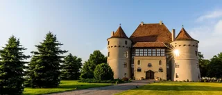
Fotografie a locației · Sursa fotografiei Cetatea de Baltă · Castel
Castelul Bethlen-Haller
Castel renascentist cu patru turnuri la Cetatea de Baltă, domeniul Jidvei: tururi ghidate, degustări în pivniță și cazare doar pentru grupuri cu eveniment.
DJ107 89, 517235 Cetatea de Baltă+40 753 992 255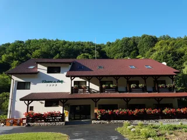
Fotografie a locației · Sursa fotografiei Poiana Galdei · Pensiune
Pensiunea Floare De Colț
Pensiunea Floare De Colț. Un oaspete descrie pensiunea din Poiana Galdei pe malul râului, cu o curte verde și plăcinte pe lespede la masă.
Poiana Galdei, nr. 74, 517294 Poiana Galdei+40 788 327 710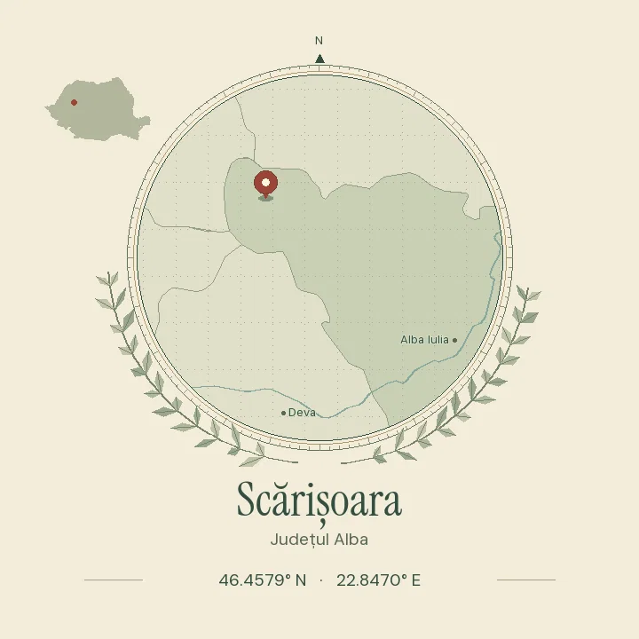
Hartă ilustrată Scărișoara · Restaurant
Conacul Samfirei
Pensiune cu restaurant rustic în Gârda de Sus, Alba: curte cu mese acoperite între conifere, papanași și afinată de casă, nota 4,6.
Comuna Garda de Sus , sat Izvoarele, nr. 8, 517321 Scărișoara+40 358 402 211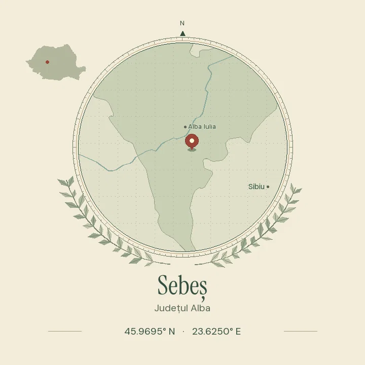
Hartă ilustrată Sebeș · Local pentru evenimente
Lavanda Domniței | Evenimente în aer liber
Lavanda Domniței | Evenimente în aer liber. La Lavanda Domniței, laturile deschise ale cortului lasă invitații de la mese să vadă verdeața.
DJ106K, 515800 Sebeș+40 727 352 033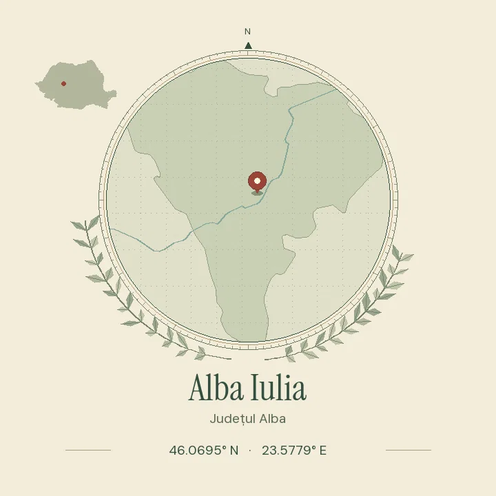
Hartă ilustrată Alba Iulia · Restaurant
La Conac
Restaurantul La Conac din Alba Iulia apare într-o relatare despre felul în care personalul a corectat o comandă de cafea rece, fără să ceară o nouă plată.
Strada Decebal 10, Alba Iulia+40 720 042 004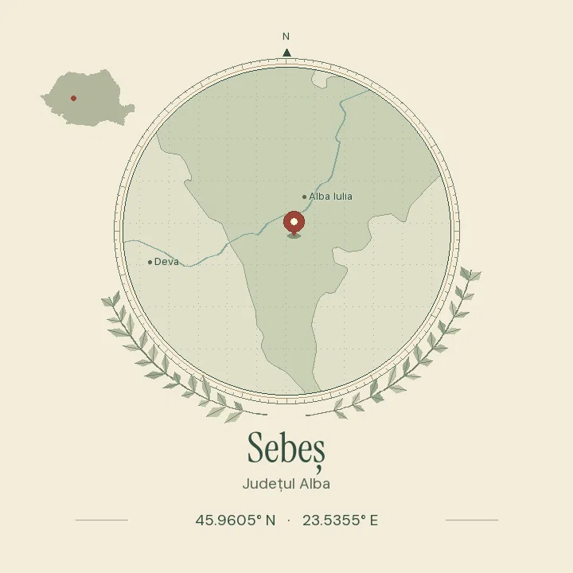
Hartă ilustrată Sebeș · Sală de nunți
Mirage Events
Un client care a luat masa la Mirage cu soția sa a descris interiorul ca modern și personalul ca amabil, însă nu a fost mulțumit de preparatele comandate.
DJ704A 26, 515800 Sebeș+40 751 554 953
Hartă ilustrată Alba Iulia · Local pentru evenimente
Restaurant Mercur
Restaurant Mercur, Alba Iulia. Un invitat la Mercur spune că, deși sala i s-a părut mare, în timpul dansului oamenii au ajuns și printre mese.
Strada Gheorghe Șincai 7, 510001 Alba Iulia+40 723 696 449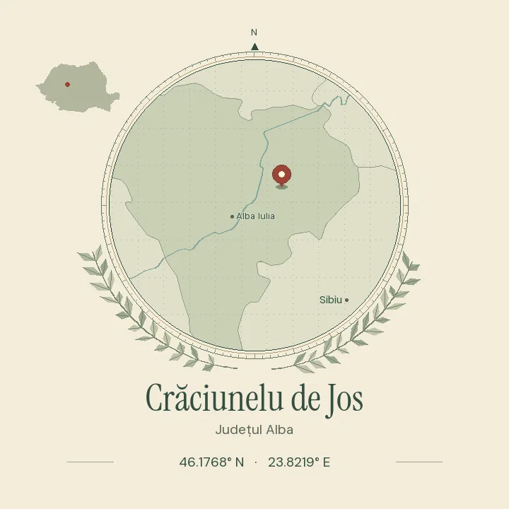
Hartă ilustrată Crăciunelu de Jos · Local pentru evenimente
Magic Garden Events Crăciunel
Magic Garden Events Crăciunel. O relatare de la Magic Garden Events din Crăciunelu de Jos pune alături grădina amenajată și servirea mesei la eveniment.
DN14B 219, 517260 Crăciunelu de Jos+40 785 880 880
Fotografie a locației · Sursa fotografiei Alba Iulia · Sală de banchete
Elida Events
Elida Events, Alba Iulia. O persoană care a vizitat restaurantul Elida spune că sala i s-a părut potrivită pentru un botez sau o nuntă restrânsă.
Strada Vasile Alecsandri nr. 2, Alba Iulia+40 744 479 772
Fotografie a locației · Sursa fotografiei Alba Iulia · Pensiune
Pensiunea ARA
Pensiunea ARA. O familie care a cerut telefonic cazare la ARA descrie o neînțelegere legată de împărțirea adulților și copiilor în camere diferite.
Strada Drăgășani 15D, 510002 Alba Iulia+40 745 173 747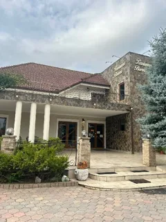
Fotografie a locației · Sursa fotografiei Lancrăm · Restaurant
Pensiunea Boema
Pensiunea Boema, Lancrăm. Suma menționată în acea relatare privește o masă obișnuită și nu se poate transforma direct în preț pentru nuntă.
Strada Principală 276, 515801 Lancrăm+40 740 992 210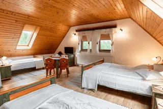
Fotografie a locației · Sursa fotografiei Colțești · Restaurant
Conacul Secuiesc
Conac cu terasă spre Masivul Trascău la Colțești, Alba, cu peste 5.000 de evaluări. Unde e lăudat, unde e criticat și ce să ceri pentru nuntă.
DJ107M, 517611 Colțești+40 730 210 768
Fotografie a locației · Sursa fotografiei Alba Iulia · Hotel
Hotel Medieval
Hotel Medieval, Alba Iulia. Un turist descrie dificultăți în a intra prin zona sudică a cetății la ora pe care o aștepta.
Strada Militari 2, 510009 Alba Iulia+40 372 919 965
Fotografie a locației · Sursa fotografiei Alba Iulia · Pensiune
Pensiune Casa Traiana
Pensiune Casa Traiana. La Casa Traiana, un oaspete interesat de cetatea din Alba Iulia a apreciat apropierea și micul dejun ales din meniu, pregătit pe loc.
Strada Arieșului 49A, 510178 Alba Iulia+40 728 444 318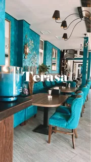
Fotografie a locației · Sursa fotografiei Alba Iulia · Restaurant
Prestige Alba Iulia
Prestige Alba Iulia. De la Prestige, un oaspete estimează aproximativ douăzeci de minute de mers pe jos până la Poarta a III-a a cetății.
Strada Vasile Alecsandri 68A, 510165 Alba Iulia+40 773 396 820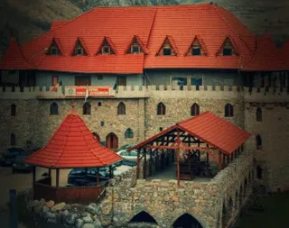
Fotografie a locației · Sursa fotografiei Vălișoara · Vilă
Castelul Templul Cavalerilor
Castelul Templul Cavalerilor, Vălișoara. Pentru invitația de nuntă, merită să diferențiați punctul final de aceste opriri tentante de pe traseu.
DJ107M Nr. 182 Sat, 517393 Vălișoara+40 731 342 637
Hartă ilustrată Alba Iulia · Sală de nunți
Hanul cu Berze
La Hanul cu Berze, curtea cu o căsuță de joacă, două tobogane și foișor din lemn poate atrage familiile care vin cu copii la Alba Iulia.
Strada Regimentul V Vânători 83-85, 510158 Alba Iulia+40 747 110 143
Hartă ilustrată Alba Iulia · Bed & Breakfast
Pensiunea Terra
Pensiunea Terra, Alba Iulia. Un oaspete al pensiunii Terra spune că în camera în care a stat a găsit un ventilator și îi lipsea frigiderul.
Bulevardul Republicii 5B, 510077 Alba Iulia+40 744 785 465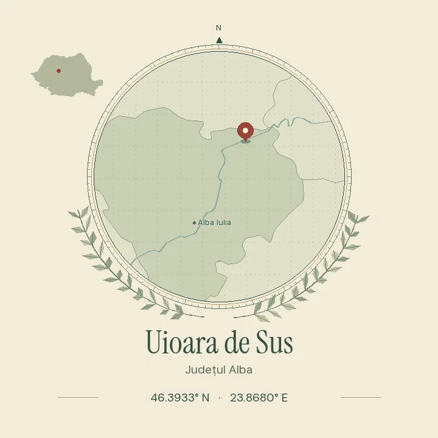
Hartă ilustrată Uioara de Sus · Castel
Castelul Teleki
Ruina neogotică a Castelului Teleki din Uioara de Sus: acces nemarcat, clădire degradată. Nu e loc de nuntă; ce să afli pentru poze.
Strada Zorilor, Uioara de Sus
Întrebări despre locațiile din județul Alba
Unde pot dormi invitații în județul Alba?
În registrul de cazare SITUR găsim Pensiunea Element (20 de locuri de cazare), Pensiunea Alba Forum (14 locuri de cazare), Mariss Events (57 de locuri de cazare). Verifică ce camere sunt libere pentru noaptea evenimentului.
Ce proprietăți din județul Alba au grădină sau terasă?
Pensiunea Alba Forum (terasă); Terasa Viilor (terasă); Domeniile Martinutzi (grădină). Cere administratorului condițiile de folosire pentru o petrecere privată.
Care locație din județul Alba are cele mai multe evaluări Google?
Conacul Secuiesc are 5.082 de evaluări în profilul Google folosit la documentare. Evaluările acoperă și alte experiențe la proprietate, inclusiv vizitele fără eveniment.
Unde apare o intrare accesibilă în județul Alba?
Profilurile Google indică o intrare accesibilă la Terasa Viilor, Luxury Events Ballroom, Cosmopolitan Ballroom. Pentru o cununie în exterior, cere detalii despre traseul dintre intrare și zona cu scaune.